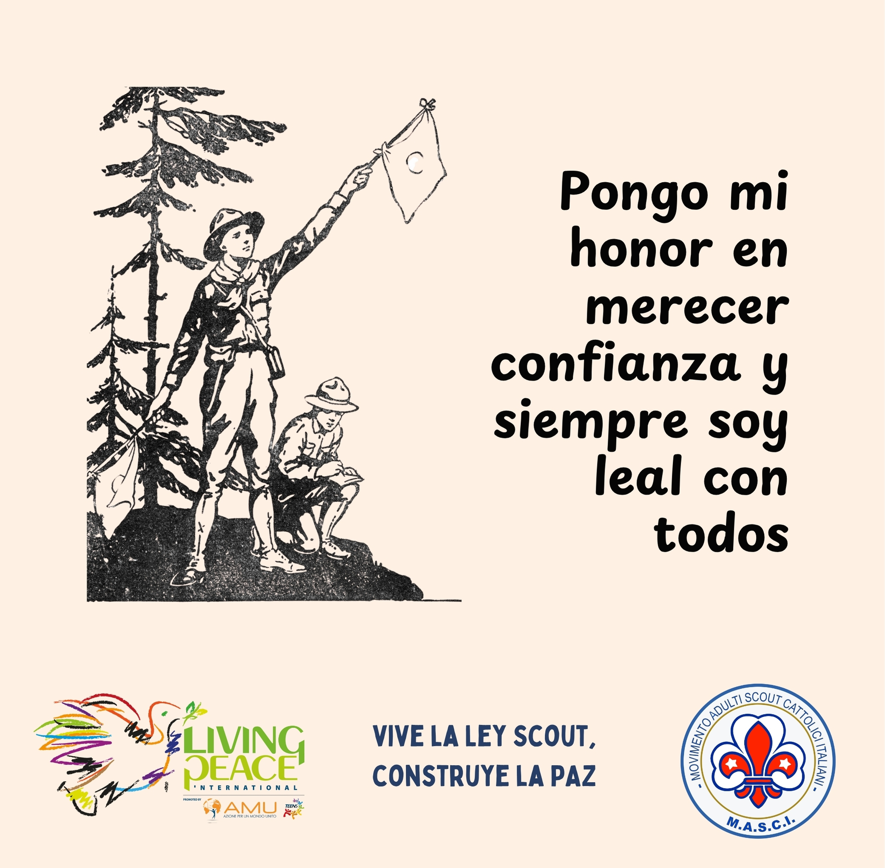
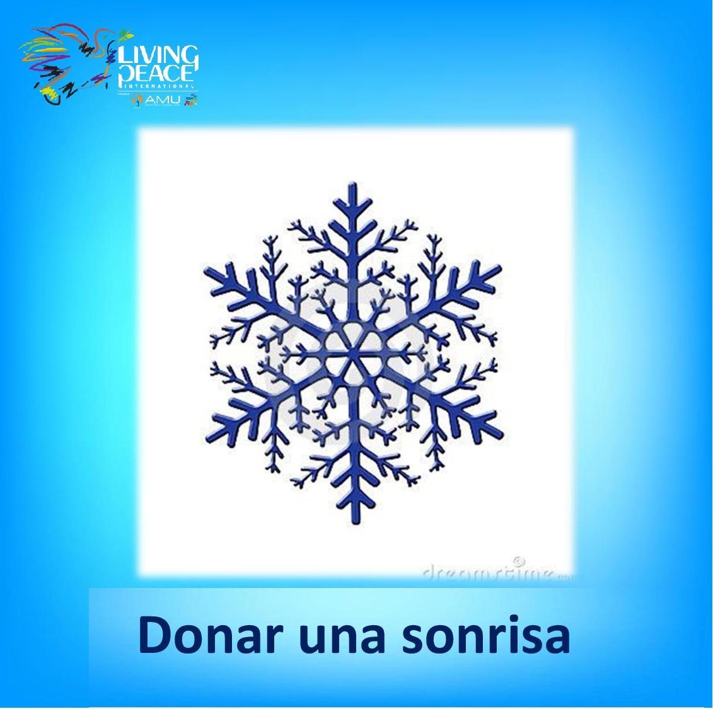
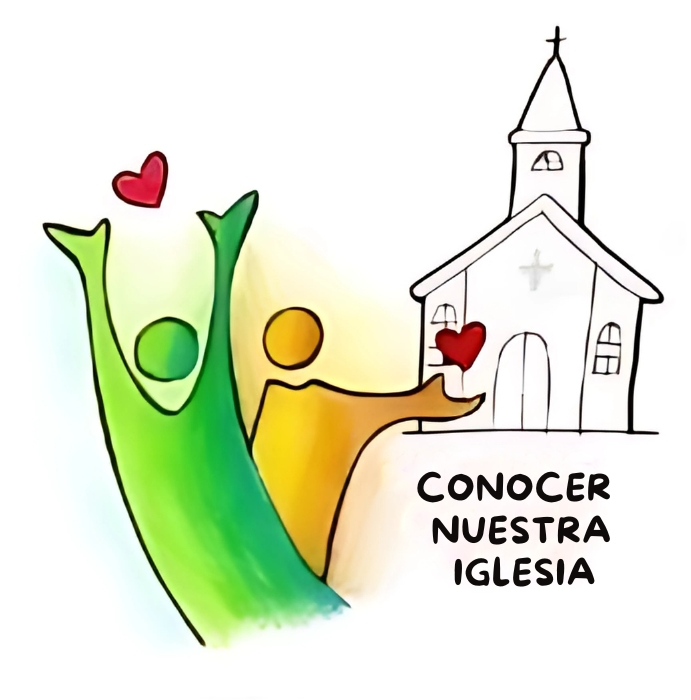
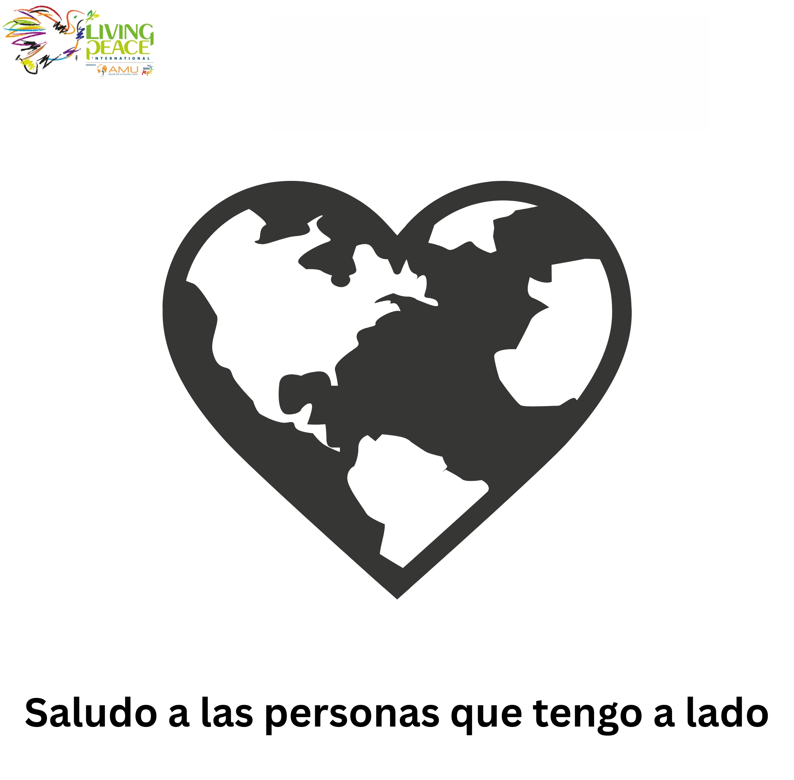

VARIOS CAMINOS · UNA MISMA PAZ
¿En qué lugar de tu vida quieres
poner la paz en juego?
Descubre una colección de Dados de la Paz para sembrar gestos concretos de paz en los espacios donde transcurre la vida cotidiana:
- La convivencia
- El cuidado de la Casa Común
- El juego
- La familia
- La cercanía con los demás
- La música
- La cultura
- El diálogo interreligioso
- Los valores
- El voluntariado
- La Navidad
- La comunión
- El deporte
- La psicología
- La ingeniería
- La empresa
- La infancia
Porque la paz no es un único camino. Es una forma de vivir cada uno de ellos.
 Multidioma
CONVIVENCIA · PARA LA PAZDado de la Paz
Multidioma
CONVIVENCIA · PARA LA PAZDado de la PazSeis gestos para amar, escuchar, perdonar y construir fraternidad.
Abrir experiencia → Multidioma
ECOLOGÍA · PARA LA PAZDado ecológico
Multidioma
ECOLOGÍA · PARA LA PAZDado ecológicoCuidar la casa común como un camino concreto de paz.
Abrir experiencia → Multidioma
JUEGO IDEAL · PARA LA PAZDado del juego ideal
Multidioma
JUEGO IDEAL · PARA LA PAZDado del juego idealJugar con alegría, incluir a todos y hacer del juego un espacio de paz.
Abrir experiencia → Multidioma
FAMILIA · PARA LA PAZDado para las familias
Multidioma
FAMILIA · PARA LA PAZDado para las familiasGestos concretos para escuchar, comprender y reavivar el amor familiar.
Abrir experiencia → Multidioma
PROXIMIDAD · PARA LA PAZDado para la proximidad
Multidioma
PROXIMIDAD · PARA LA PAZDado para la proximidadSeis gestos para acercarse al otro con mirada limpia, tiempo y compasión.
Abrir experiencia → Multidioma
MÚSICA · PARA LA PAZDado para la música
Multidioma
MÚSICA · PARA LA PAZDado para la músicaHacer de la música un lenguaje de armonía, encuentro y paz.
Abrir experiencia → Multidioma
CULTURA PARA LA PAZCultura para la paz - dado inculturado Etiopía
Multidioma
CULTURA PARA LA PAZCultura para la paz - dado inculturado EtiopíaDado inculturado Etiopía: arte, cultura y gestos concretos para vivir la paz.
Abrir experiencia → Multidioma
DIÁLOGO INTERRELIGIOSO · PARA LA PAZDado interreligioso
Multidioma
DIÁLOGO INTERRELIGIOSO · PARA LA PAZDado interreligiosoMensajes de distintas tradiciones para vivir respeto, compasión y fraternidad.
Abrir experiencia → ES
VALORES · PARA LA PAZDado axiológico de la Paz
ES
VALORES · PARA LA PAZDado axiológico de la PazUn camino para poner la paz en juego con gestos concretos.
Abrir experiencia →
ES GUÍAS Y SCOUTS · PARA LA PAZDado de la Paz de las Guías y los ScoutsUn camino para poner la paz en juego con gestos concretos.
Abrir experiencia → ES
VOLUNTARIADO · PARA LA PAZDado de la Paz para el voluntariado
ES
VOLUNTARIADO · PARA LA PAZDado de la Paz para el voluntariadoUn camino para poner la paz en juego con gestos concretos.
Abrir experiencia → EN
ADOLESCENTES · PARA LA PAZDado de la Paz para adolescentes
EN
ADOLESCENTES · PARA LA PAZDado de la Paz para adolescentesUn camino para poner la paz en juego con gestos concretos.
Abrir experiencia → ES
CONCIENCIA · PARA LA PAZDado de la conciencia de la Paz
ES
CONCIENCIA · PARA LA PAZDado de la conciencia de la PazUn camino para poner la paz en juego con gestos concretos.
Abrir experiencia → ES
PSICOLOGÍA · PARA LA PAZDado de la Paz en psicología
ES
PSICOLOGÍA · PARA LA PAZDado de la Paz en psicologíaUn camino para poner la paz en juego con gestos concretos.
Abrir experiencia →
ES NAVIDAD · PARA LA PAZDado de la Paz para la NavidadUn camino para poner la paz en juego con gestos concretos.
Abrir experiencia →
ES COMUNIÓN · PARA LA PAZDado de la Paz para la comuniónUn camino para poner la paz en juego con gestos concretos.
Abrir experiencia →
ES EMPRESA · PARA LA PAZDado empresarial de la PazUn camino para poner la paz en juego con gestos concretos.
Abrir experiencia → Multidioma
DEPORTE · PARA LA PAZDado de la Paz para el deporte
Multidioma
DEPORTE · PARA LA PAZDado de la Paz para el deporteUn camino para poner la paz en juego con gestos concretos.
Abrir experiencia → Multidioma
INFANCIA · PARA LA PAZDado infantil de la Paz
Multidioma
INFANCIA · PARA LA PAZDado infantil de la PazUn camino para poner la paz en juego con gestos concretos.
Abrir experiencia → Multidioma
INGENIERÍA · PARA LA PAZDado de la Paz para la ingeniería
Multidioma
INGENIERÍA · PARA LA PAZDado de la Paz para la ingenieríaUn camino para poner la paz en juego con gestos concretos.
Abrir experiencia → AR
QURAN · PARA LA PAZDado Quran para la Paz
AR
QURAN · PARA LA PAZDado Quran para la PazUn camino para poner la paz en juego con gestos concretos.
Abrir experiencia →